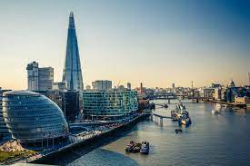

The image displays a prominent view of the Shard, a distinctive skyscraper in London, England.

Why Visit The Shard in London, England?
Touch the Sky in One of Europe’s Tallest Buildings
🌟 1. Iconic London Landmark
- The Shard is one of the most recognizable skyscrapers in Europe.
- At 310 meters (1,017 feet), it's the tallest building in the UK.
- Designed by Renzo Piano, it resembles a glass shard piercing the sky.
🔭 2. The View from The Shard
- Observation decks on floors 68, 69, and 72.
- Enjoy 360° panoramic views of London — up to 40 miles out.
- See landmarks like Tower Bridge, St. Paul’s Cathedral, London Eye, Thames River, and Wembley Stadium.
- Tip: Visit at sunset or night for magical city lights.
🍽️ 3. Dine in the Sky
- Home to top fine dining restaurants:
- Aqua Shard – contemporary British cuisine
- Oblix – luxury grill and bar
- Ting – Asian-British fusion at Shangri-La Hotel
- Dine with stunning skyline views.
🏨 4. Stay at the Shangri-La Hotel
- Located inside The Shard (floors 34–52).
- Luxury rooms with floor-to-ceiling city views.
- Features: infinity pool, spa, exceptional service.
🛍️ 5. Perfect for Visitors & Tourists
- Located in historic London Bridge area.
- Nearby attractions: Borough Market, Tower of London, Southbank.
- Easy access via London Bridge Station (train, Tube, buses).